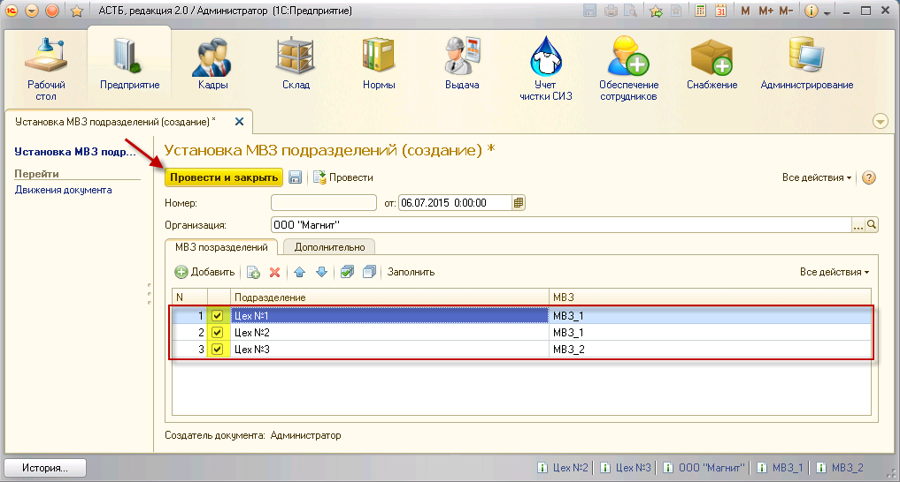
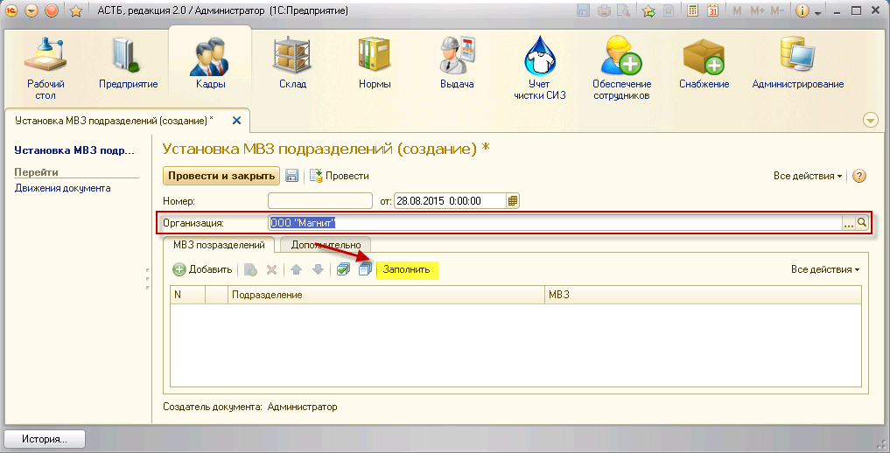
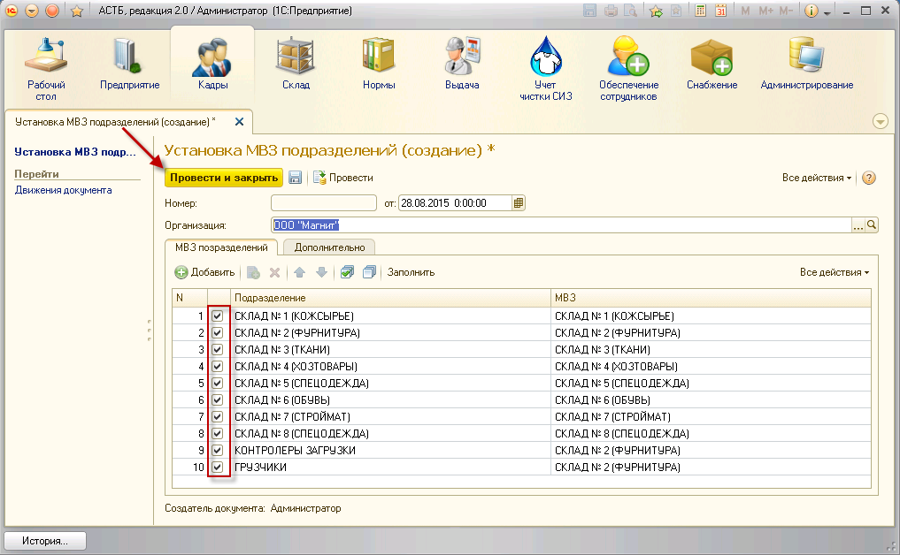

Все созданные подразделения должны быть привязаны к МВЗ. В программе это осуществляется с помощью специального приказа. Для привязки МВЗ к подразделениям перейдите в раздел «Кадры», приказ «Установка МВЗ подразделений», и в открывшемся окне нажмите кнопку «Создать».
В окне «Установка МВЗ подразделений (создание)» необходимо указать организацию и нажать кнопку «Добавить». После этого появится первая строка таблицы, в которой нужно установить соответствие между подразделением и нужным МВЗ. Чтобы добавить новую строку, снова нажмите кнопку «Добавить». Используя кнопку <...>, можно выбирать уже созданные подразделения и МВЗ и подставлять их в таблицу.
Примечание: данная форма содержит кнопку «Создать копированием», с ее помощь можно дублировать уже введенные строки. Чтобы создать новый элемент, выделите нажатием копируемый элемент и нажмите кнопку «Создать копированием». После этого в таблице появится продублированная строка для последующего редактирования.
Таким образом, к каждому созданному подразделению следует подставить нужное МВЗ, проставить флажки для каждой действующей строки и нажать кнопку «Провести и закрыть».

Сформированный документ можно будет найти в разделе «Кадры», в приказе «Установка МВЗ подразделений».
Для привязки МВЗ к подразделениям перейдите в раздел «Кадры», приказ «Установка МВЗ подразделений», и в открывшемся окне нажмите кнопку «Создать».
В окне «Установка МВЗ подразделений (создание)» необходимо указать организацию и нажать кнопку «Заполнить».

После этого табличная часть автоматически заполнится подразделениями организации. Если МВЗ были ранее заданы, то они будут автоматически проставлены к нужным подразделениям. Если производится первоначальное заполнение баз, столбец «МВЗ» будет пустым.
Установите недостающие МВЗ для всех подразделений, проставьте флажки напротив действующих соответствий и нажмите «Провести и закрыть».
